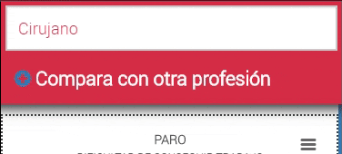
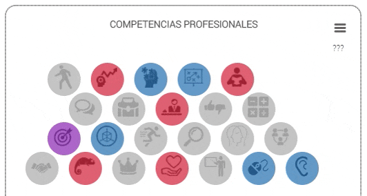

# Compara dos profesiones
Haz click en "Compara otra profesión" e introduce la profesión que quieres comparar con Limpiadores de piscinas. Visualizarás rapidamente las diferencias de tasa de empleo actual, el salario bruto anual, las capacidades que más se requieren y cuanto tiempo se tarda en tener una titulación de Limpiadores de piscinas y la profesión comparada.

Además podrás descargar imagenes de las gráficas comparativas y compartir los resultados en tus redes sociales. Sólo tienes que abrir el menu de la esquina izquierda y seleccionar facebook ó LinkedIn.
